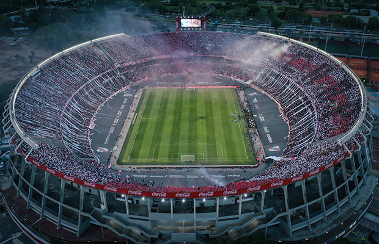
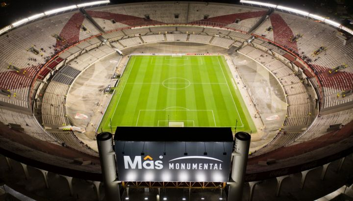

El Estadio Monumental, también conocido como Estadio Mâs Monumental por cuestiones de patrocinio, fue
inaugurado el 26
de mayo de 1938 en la Ciudad de Buenos Aires, más precisamente en el barrio porteño de Núñez. En 1933
Antonio Vespucio
Liberti asumió su primera presidencia dentro del club, y con ella la idea de mudar la localía.El 31 de
octubre de
1934 se firmaron los boletos de compra de los terrenos de 83.950 metros cuadrados ubicados en el barrio de
Núñez, con un
precio de $ 569.403.El 27 de septiembre de 1936 bajo la dirección del estudio Aslan y Ezcurra Arquitectos,
comenzaron
las obras del estadio.
En la fecha de la inauguración se llevó a cabo un encuentro amistoso frente a Peñarol de Uruguay. Aquel día
River venció
a los uruguayos por 3-1. La primera tribuna en ser construida fue la actual San Martín. Luego se realizó la
Belgrano,
quedando en medio de ambas el espacio para hacer las tribunas Colonia (Sívori) y Centenario. Por ende, esta
última fue
la tercera en ser levantada.
Durante 1977 y 1978, se construyó la bandeja superior de la tribuna norte y transfomó las bandejas
inferiores en
plateas, para la Copa Mundial de Fútbol de 1978.Desde 1986, el estadio lleva el nombre del presidente que
inició su
construcción, Antonio Vespucio Liberti.
La capacidad actual del estadio es de 70 074 espectadores, luego de las remodelaciones realizadas en el año
2019.
Cabe destacar que existen registros de que han asistido más de 80 000 personas en partidos de gran
relevancia, tales
como en el último encuentro de la Copa América 1959 entre Argentina y Brasil, y la final de la Copa
Libertadores 1996
entre River y el América de Cali.
Las instalaciones del club cuentan con espacios para jugar al tenis, pádel, hockey, balonmano, etcétera.
También se
encuentran una pensión para jóvenes futbolistas, un teatro, una biblioteca, un moderno quincho, juegos para
niños,
piletas (cubierta climatizada y descubiertas) y un amplio estacionamiento. Además de los distintos gimnasios
dónde se
practican diferentes disciplinas, el club cuenta con un microestadio que es donde principalmente se
desempeña el equipo
profesional de baloncesto del club y el equipo de vóley.
Entre las instalaciones importantes del club se encuentra ubicado a metros del estadio el Museo River, el
cual fue
inaugurado en 2009 aunque el ingreso para el público en general se habilitó el 25 de noviembre. Es uno de
los museos
deportivos más grandes del mundo, con una superficie cubierta de 3500 metros cuadrados. El recinto fue
concebido y
desarrollado por un equipo multidisciplinario y cuenta con novedosos diseños, instalaciones originales,
avanzadas
técnicas escenográficas, recursos escénicos sonoros y audiovisuales. Entre las exposiciones que se exhiben
se encuentran
la historia del club desde sus comienzos, las distintas camisetas utilizadas a lo largo de los años, los
trofeos y las
campañas de los títulos obtenidos (tanto locales como internacionales) y homenajes a los jugadores más
destacados.
River Plate posee un centro de entrenamiento ubicado en el partido de Ezeiza del Gran Buenos Aires, el cual es utilizado habitualmente por el plantel de primera división, el equipo femenino y las divisiones inferiores. Este predio, denominado River Camp desde 2016, tiene una extensión de 14 hectáreas y cuenta con varias canchas con las mismas medidas del estadio Monumental, además de otros dos campos de juego más reducidos para entrenamientos específicos.Entre todas las comodidades que el equipo posee en el predio se destacan: un vestuario para hasta 50 jugadores, con sector de masajes y doble jacuzzi incluido, un vestuario para 20 integrantes del cuerpo técnico, departamentos de kinesiología, neurociencia, psicología y nutrición, un comedor interno para casi 100 personas y salas de reuniones.